1. Which of the following C6H6 compounds has a single set of structurally equivalent hydrogen atoms?
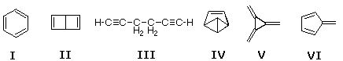
2. Which of the following compounds would be not be considered aromatic in its behavior?
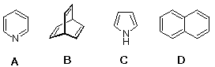
3 How many isomeric tribromobenzenes exist? A) none! (such a compound cannot exist) B) 1 C) 2 D) 3
4 A C8H10 hydrocarbon is nitrated by HNO3 and sulfuric acid. Two, and only two, C8H9NO2 isomers are obtained. Which of the following fits this evidence? A) ethylbenzene B) ortho-xylene C) meta-xylene D) para-xylene
5 Which of the following is an important reactive electrophile in aromatic ring nitration? A) NO2(+) B) NO(+) C) N2(+) D) N2O(+)
6 Bromination of meta-chloronitrobenzene may produce how many C6H3ClBrNO2 isomers? A) 1 B) 2 C) 3 D) 4
7 What C9H12 hydrocarbon would give a single C9H11SO3H product on sulfonation?
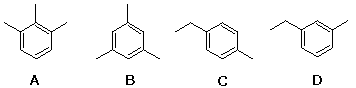
8 How many isomeric dinitrobenzoic acids can exist? C6H3(NO2)2CO2H A) 3 B) 4 C) 5 D) 6
9 Which of the following compounds is phenanthrene?
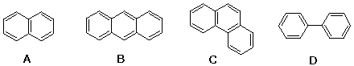
10 Which of the following is phenol? A) C6H5OH B) C6H5CH2OH C) C6H5COCH3 D) C6H5OCH3
11 What is the order of reactivity of the following compounds in electrophilic substitution? (more reactive > less reactive) I toluene II nitrobenzene III benzene IV phenol A) I > II > III > IV B) IV > III > II > I C) I > III > IV > II D) IV > I > III > II
12 What is the order of reactivity of the following compounds in electrophilic substitution? (more reactive > less reactive) I chlorobenzene II aniline III ethylbenzene IV benzoic acid A) I > II > III > IV B) II > III > I > IV C) I > III > IV > II D) II > I > IV > III
13 Which of the following structures most closely represents an intermediate in the electrophilic bromination of para-xylene?
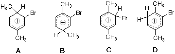
14 What is the order of increased meta electrophilic substitution for the following compounds? ( more meta product > less meta product) I C6H5N(CH3)3(+) II C6H5CH2Cl III C6H5CHCl2 IV C6H5CCl3 A) I > II > III > IV B) III > II > IV > I C) I > II > IV > III D) I > IV > III > II
15 Which of the following benzene ring substituents is deactivating but ortho-para directing? A) -N=O B) -OCH3 C) -COCH3 D) -NO2
16 Which of the following compounds forms ortho-benzenedicarboxylic acid when oxidized by hot aqueous potassium permanganate?
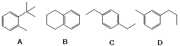
17 Which of the following organic chlorides will not give a Friedel-Craft alkylation product when heated with benzene and AlCl3. A) (CH3)3CCl B) CH2=CHCH2Cl C) CH3CH2Cl D) CH2=CHCl
18 Electrophilic bromination of para-toluenesulfonic acid, folowed by heating with 50% sulfuric acid produces ortho-bromotoluene. Which of the following intermediates leads to this product?
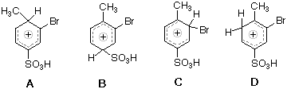
19 Which of the following is the major product from sulfonation of α-tetralone?
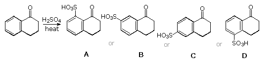
20 Which of the following substituents on a benzene ring is ortho-para directing? A) -OCOCH3 B) -COCH3 C) -CO2H D) -CN
21 Which of the following compounds reacts rapidly with Br2 in the dark? A) benzene B) anisole C6H5OCH3 C) acetophenone C6H5COCH3 D) none of the above
22 What is the expected order of reactivity of the following compounds in electrophilic nitration? (more reactive > less reactive)
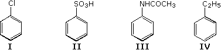
23 Which of the following is the major product from bromination of meta-nitrobenzenesulfonic acid?
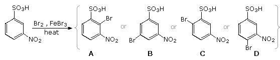
24 Which of the following is the major product from this reaction?
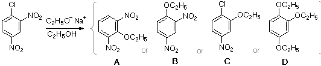
25 Which of the following reaction sequences would be best for converting para-bromoanisole to ortho-ethylanisole? A) (i) H2 & Pt catalyst (ii) C2H5Cl & AlCl3 B) (i) Mg in ether (ii) aqueous alcohol (iii) C2H5Cl & AlCl3 C) (i) Mg in ether (ii) C2H5Cl & AlCl3 D) (i) C2H5Cl & AlCl3 (ii) Mg in ether (iii) aqueous alcohol
26 What is the expected order of reactivity of the following compounds in electrophilic chlorination (Cl2 + FeCl3)? (more reactive > less reactive)
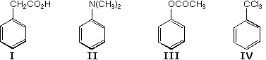
27 When Friedel-Craft alkylation of benzene is carried out with 1 equiv. of tert-butyl chloride, a large amount of para-di-tert-butylbenzene is formed, along with the mono-substitution product.Why doesn't all the benzene react to give tert-butylbenzene (the mono-substitution product)? A) the tert-butyl substituent activates the benzene ring to further substitution. B) the reaction is bimolecular, so two tert-butyl chloride molecules combine with one benzene molecule. C) the tert-butyl substituent is large and favors reaction at the para-position. D) the disubstituted product is favored in equilibrium with the mono-substituted ring..
28 When para-bromotoluene is treated with NaNH2 in ether, the bromine is lost and a mixture of para & meta-CH3C6H4NH2 products is obtained. What kind of intermediate would account for this? A) a charge delocalized anion formed by nucleophilic addition of NH2(-) to the benzene ring.. B) a charge delocalized anion formed by abstraction of a methyl proton by the base NH2(-). C) an aryl cation formed by loss of bromide anion. D) a benzyne species formed by elimination of HBr.
29 How might one best accomplish the following synthesis?
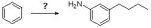
30 Sulfonation of naphthalene by conc. sulfuric acid produces the 1-sulfonic acid at 120 ºC and the 2-sulfonic acid at 160 ºC. Which of the following statements is not true? A) the 2- sulfonic acid is kinetically favored B) sulfonation is a reversible reaction C) the 2- sulfonic acid is thermodynamically favored (more stable) D) electrophilic attack at C-1 is favored over attack at C-2
31 Which of the following is the likely outcome from this reaction?
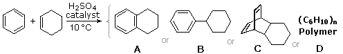
32
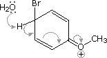
33 Which of the following heterocyclic compounds would have aromatic character?
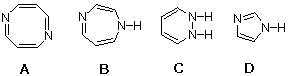
34 C6H5OCH2CH2Br is heated with Mg in ether and then quenched in cold 10% HCl.What organic product will be obtained by ether extraction of the aqueous acid? A) C6H5OCH2CH3 B) C6H5OCH2CH2OH C) C6H5OH D) C6H6
35 A C9H12O compound is reacted with a solution of lithium in liquid ammonia.After evaporation of the ammonia, the residue is warmed with 10% HCl and extracted with ether.The product is identified as 2-cyclohexenone. Which of the following might be the starting compound? A) C6H5OC3H7 B) C6H5CH2CH2CH2OH C) C6H5CH2CH2OCH3 D) C6H5CH2CH(OH)CH3
36 Which of the following procedures would be best for the preparation of phenyl benzyl ether? C6H5OCH2C6H5 A) C6H5Cl + C6H5CH2O(-) Na(+) B) C6H5O(-) Na(+) + C6H5CH2Cl C) 2 C6H5Cl + Na2O D) 2 C6H5MgBr + CH2O
37 Which of the following procedures would be best for achieving the following reaction?
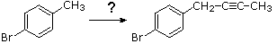
38 Which of the following procedures would be best for achieving the following reaction?
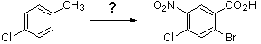
39 Which of the following statements best evaluates the reaction shown below?
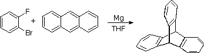
40 Which reaction sequence would be best for preparing 3,5-dibromoaniline from nitrobenzene? A) (i) 3 H2 & Pt or Ni catalyst (ii) 2 Br2 in ether B) (i) excess Br2 + FeBr3 & heat (ii) 3 H2 & Pt or Ni catalyst C) (i) 3 H2 & Pt or Ni catalyst (ii) H2SO4 & heat (iii) excess HBr D) (i) H2SO4 & heat (ii) excess Br2 + FeBr3 & heat (iii) 3 H2 & Pt or Ni catalyst
41 Which of the following carboxylic acids could be resolved by reaction with an enantiomerically pure chiral amine?
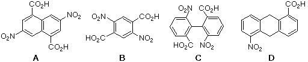
42 How could one prepare 3,4,5-tribromoaniline from para-nitroaniline? note: HNO2 = NaNO2 + 10% H2SO4 A) (i) 3 H2 & Pt or Ni catalyst (ii) 2 Br2 in ether (iii) HNO2 0 ºC (iv) H3PO2 B) (i) 3 H2 & Pt or Ni catalyst (ii) HNO2 0 ºC (iii) excess Cu2Br2 + HBr C) (i) 2 Br2 in ether (ii) 3 H2 & Pt or Ni catalyst (iii) HNO2 0 ºC (iv) H3PO2 D) (i) 2 Br2 in ether (ii) HNO2 0 ºC (iii) Cu2Br2 (iv) 3 H2 & Pt or Ni catalyst
43 How could one prepare 3,5-dibromophenol from para-nitroaniline? note: HNO2 = NaNO2 + 10% H2SO4 A) (i) 2 Br2 in ether (ii) HNO2 0 ºC (iii) H3PO2 (iv) 3 H2 & Pt or Ni catalyst (v) HNO2 0 ºC, then heat B) (i) 3 H2 & Pt or Ni catalyst (ii) HNO2 0 ºC (iii) excess Cu2Br2 + HBr (iv) KOH & heat C) (i) HNO2 0 ºC, then heat (ii) 2 Br2 in ether (iii) 3 H2 & Pt or Ni catalyst (iv) HNO2 0 ºC (v) Cu2Br2 + HBr D) (i) 2 Br2 in ether (ii) HNO2 0 ºC (iii) Cu2Br2 (iv) 3 H2 & Pt or Ni catalyst (v) HNO2 0 ºC, then heat
44 Iodination of benzene is not easily caried out. How can one prepare para-iodobenzoic acid from para-nitrotoluene? note: HNO2 = NaNO2 + 10% H2SO4 A) (i) Br2 + FeBr2 (ii) Mg in ether, then CO2 (iii) 3 H2 & Pt or Ni catalyst (iv) HNO2 0 ºC (v) KI solution B) (i) NBS in CCl4 & heat (ii) NaI in acetone (iii) 3 H2 & Pt or Ni catalyst (iv) HNO2 0 ºC (v) H3PO2 C) (i) 3 H2 & Pt or Ni catalyst (ii) HNO2 0 ºC (iii) Cu2Br2 + HBr (iv) KMnO4 & heat (v) KI solution D) (i) KMnO4 & heat (ii) 3 H2 & Pt or Ni catalyst (iii) HNO2 0 ºC (iv) KI solution
45 An important group of comercial dyes, known as azo dyes, are prepared by a diazo coupling reaction. What functional group characterizes an azo dye? A) –N=O B) –N3 C) –N=N– D) –NO2
46 Which sequence of reactions would be best for preparing meta-propylaniline from benzene? A) (i) HNO3 & H2SO4 & heat (ii) C3H7COCl + AlCl3 (iii) 5 H2 & Pt or Ni catalyst B) (i) C3H7COCl + AlCl3 (ii) HNO3 & H2SO4 & heat (iii) 5 H2 & Pt or Ni catalyst C) (i) C3H7COCl + AlCl3 (ii) 2 H2 & Pt or Ni catalyst (iii) HNO3 & H2SO4 & heat (iv) 3 H2 & Pt or Ni catalyst D) (i) HNO3 & H2SO4 & heat (ii) 3 H2 & Pt or Ni catalyst (iii) C3H7COCl (iv) 2 H2 & Pt or Ni catalyst
47 The insecticide DDT (C14H9Cl5) is prepared by heating chlorobenzene with chloral (CCl3CHO) in the presence of conc. sulfuric acid. Which of the following compounds is DDT?
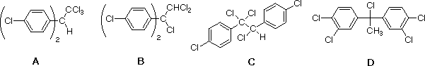
48 Phenol reacts with acetone in the presence of conc. sulfuric acid to form a C15H16O2 product. Which of the following compounds is this product?
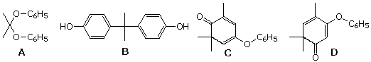
49 The aromatic heterocyclic base pyridine is sulfonated by heating with conc. sulfuric acid Which of the following statements about this reaction is correct? (note that in numbering the ring nitogen is #1) A) pyridine reacts more rapidly than benzene and is sulfonated at C-3 B) pyridine reacts more rapidly than benzene and is sulfonated at C-2 & C-4 C) pyridine reacts more slowly than benzene and is sulfonated at C-3 D) pyridine reacts more slowly than benzene and is sulfonated at C-2 & C-4
50 Heating benzene in a large excess of 80% D2SO4 in D2O results in what product? A) C6H5SO3D B) C6H5OD C) C6H5D D) C6D6
51 A solution of cyclohexene in benzene is stirred at 0 ºC while concentrated sulfuric acid is added. After washing away the acid and removing the excess benzene, what product is isolated? A) cyclohexylbenzene B) 1-cyclohexylcyclohexene C) trans-1,2-diphenylcyclohexane D) 1,1-diphenylcyclohexane
52 Devise a series of reactions to convert benzene into meta-chlorobromobenzene. Select reagents and conditions from the following table, listing them in the order of use.
53 Which of the following isomeric hydrocarbons is most acidic?
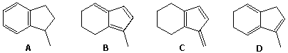